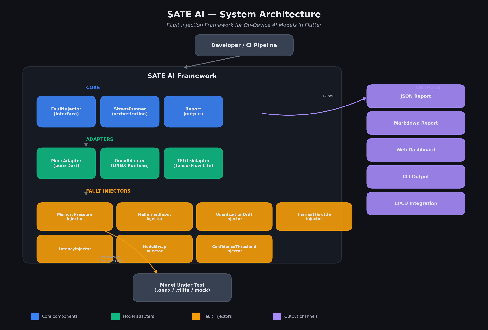
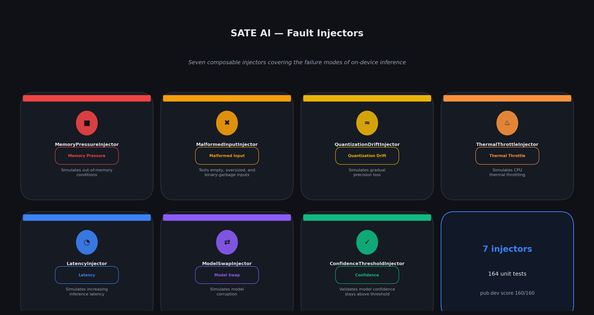
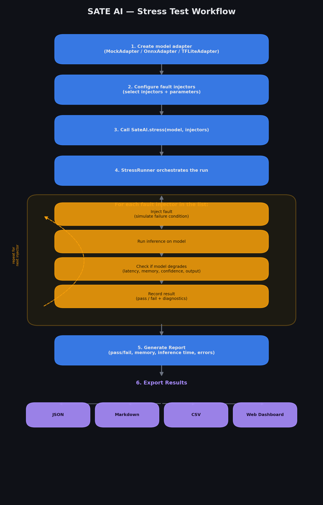
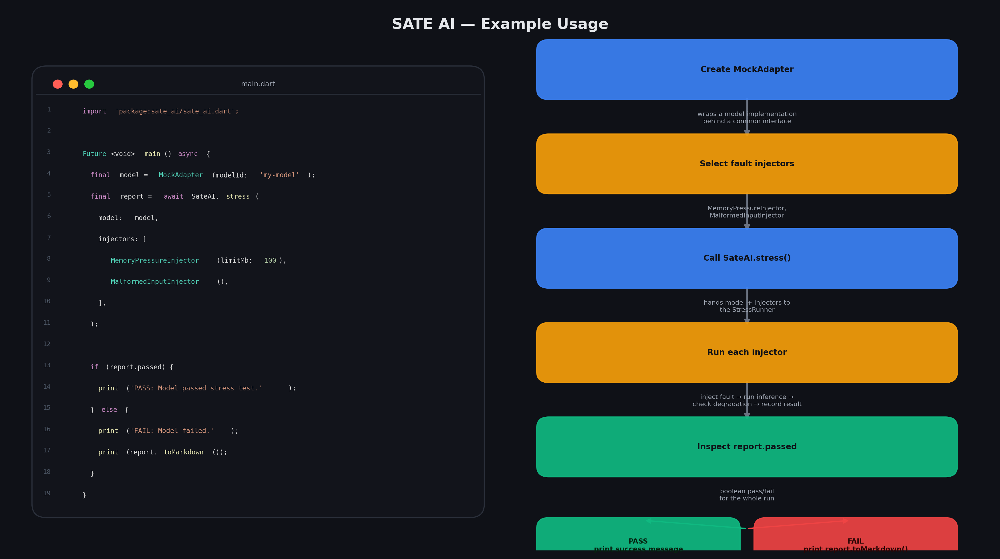

Abstract / Summary
On-device Artificial Intelligence (AI) models operating directly on mobile and edge devices face unpredictable runtime constraints including memory pressure, thermal throttling, quantization drift, unvalidated user inputs, network drops, and GPU resource contention. Existing mobile testing paradigms lack specialized fault injection mechanisms tailored for AI inference runtimes.
In this work, we present SATE AI, a systematic fault injection and evaluation framework for Flutter applications that evaluates model robustness across 11 key failure modes and 8 model adapters. The framework enables mobile developers and ML engineers to detect failure scenarios, memory leaks, and degradation prior to production deployment.
1. Software Architecture
SATE AI enforces a decoupled architecture isolating fault injectors, model adapters, and orchestration runners. This allows model runtimes (such as ONNX Runtime, TensorFlow Lite, Fllama, MediaPipe, Core ML, and Google ML Kit) to be evaluated under simulated stress scenarios without modifying the core model execution engine.

The framework features 11 fault injectors capable of targeting memory pressure, thermal degradation, quantization drift, latency spikes, input corruption, model swapping, confidence validation, network latency drops, GPU memory pressure, data corruption, and version mismatches.

2. Fault Injection Workflow
During stress execution, the StressRunner coordinates sequential or grouped fault injections against an AIModelAdapter instance. Each injector alters internal model state, monitors inference outputs, measures latency overhead, and asserts error handling compliance.

3. Implementation & Example Usage
SATE AI provides a clean programmatic Dart API for developers to wrap custom on-device runtimes, define targeted injection thresholds, and process structured StressReport outputs in JSON, Markdown, HTML, or SQLite storage formats.

4. Publication & Journal Status Note
Note on JOSS (Journal of Open Source Software) Submission: JOSS requires a minimum 6-month public repository commit history. As SATE AI was published in July 2026, formal submission to JOSS will be reconsidered after the 6-month public history window.
5. Availability & Downloads
SATE AI is open-source under the MIT license and published on pub.dev. Full LaTeX sources, BibTeX bibliography data, and research artifacts are accessible via the repository.
- PDF Paper: docs/assets/pdf/paper.pdf
- LaTeX Source: docs/assets/pdf/paper.tex
- BibTeX References: docs/assets/pdf/paper.bib